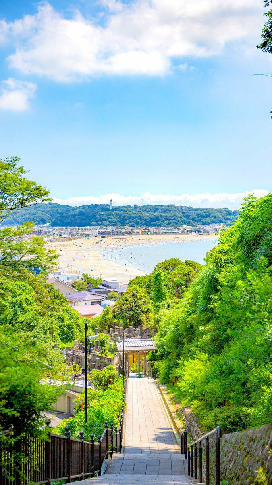
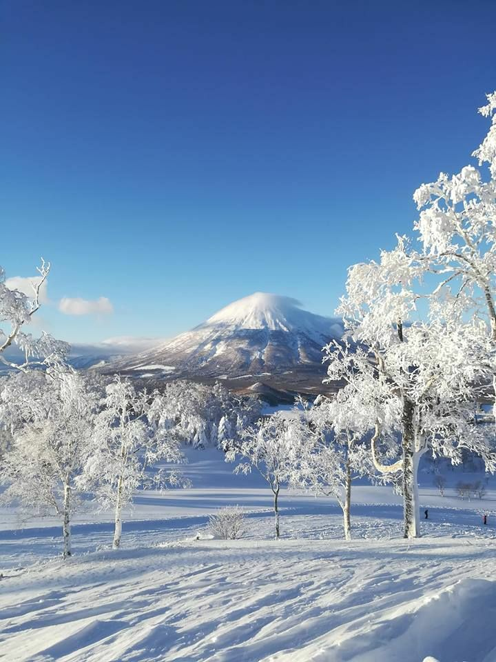

ーーー SEASON ーーー
1. SPRING
Musim semi adalah salah satu waktu paling populer untuk mengunjungi jepang. Cuaca yang ringan dan beragam warna indah dari alam yang terbangun dari bulan-bulan panjang musim dingin menarik pengunjung dari seluruh dunia yang ingin melihat apa saja yang ditawarkan jepang pada musim semi. Salah satu pemandangan terpopuler di musim semi adalah pohon sakura yang bermekaran. Bunga merah muda cantik ini, yang dikenal sebagai sakura, telah menjadi simbol jepang yang diakui secara internasional. Anda dapat melihatnya sedari bulan januari di okinawa dan hingga akhir mei di hokkaido. Namun demikian, bunga prem dan sakura bukan satu-satunya bunga yang kembali hidup. Bunga lainnya seperti fuji (wisteria) dan churripu (tulip) bermekaran selama masa tahun ini.
2. SUMMER
Musim panas diawali dengan hujan pada bulan juni, sedangkan sebagian besar bulan juli dan sedikit bulan agustus ditandai dengan hari-hari yang panas dan lembap. Sebagian besar pengunjung yang mengunjungi jepang pada waktu ini bergegas menuju pantai, danau, dan sungai. Ada berbagai aktivitas musim panas yang dapat dilakukan, termasuk berselancar, berjemur, bersnorkel, dan arung jeram sungai. Apabila anda mengunjungi jepang pada musim panas, matsuri (festival) atau hanabi taikai (pertunjukan kembang api) khas jepang adalah dua pengalaman musim panas yang tidak boleh dilewatkan. Sering kali terdapat tarian, permainan, dan musik pada matsuri musim panas. Sementara itu, pertunjukan kembang api ini merupakan tradisi khas jepang yang sudah ada sejak ratusan tahun silam.
3. AUTUMN
Pada musim gugur, bentang alam jepang dipenuhi dengan berbagai ragam warna selama jeda singkat dari terik musim panas ini. Daun musim gugur yang indah dan cuaca yang dingin menjadikan agustus dan september waktu yang populer untuk mengunjungi jepang. Wisatawan dapat berjalan menyusuri taman dan hutan serta mengagumi beragam warna daun maple jepang, yang dikenal sebagai momiji, yang secara harfiah berarti daun merah. Baik jika anda menumpangi kereta api singkat dari kota atau melakukan perjalanan semalam, pemandangan musim gugur jepang tidak boleh dilewatkan. Bagi pengunjung kota-kota jepang, inilah saat kafe, restoran, dan hiburan malam sedang semarak-semaraknya. Cuaca yang lebih sejuk juga mendorong perjalanan ke kuil atau ryo-kan (penginapan tradisional) di pinggiran kota.
4. WINTER
Pada musim dingin, salju putih menutupi bentangan alam, terutama di wilayah paling utara tohoku dan hokkaido. Bagi penggemar olahraga musim dingin, ini adalah waktu terbaik di sepanjang tahun untuk mengunjungi jepang. Resor ski dibuka, serta anda dapat mencoba berbagai aktivitas luar ruangan, termasuk ski, seluncur salju, dan snow tubing. Apabila anda belum memiliki banyak pengalaman, beberapa resor ski menawarkan pelajaran dan kursus yang dapat anda ikuti. Bagi mereka yang mencari liburan yang lebih santai, anda dapat mengunjungi rotenburo (permandian air panas) dengan salju yang jatuh perlahan di sekitar anda atau mencicipi sup hot pot populer khas jepang yang dikenal sebagai nabe. Cuaca cukup kering selama musim dingin karena matahari terbenam lebih awal, anda akan melihat pertunjukan cahaya yang telah diatur untuk dinikmati pengunjung.